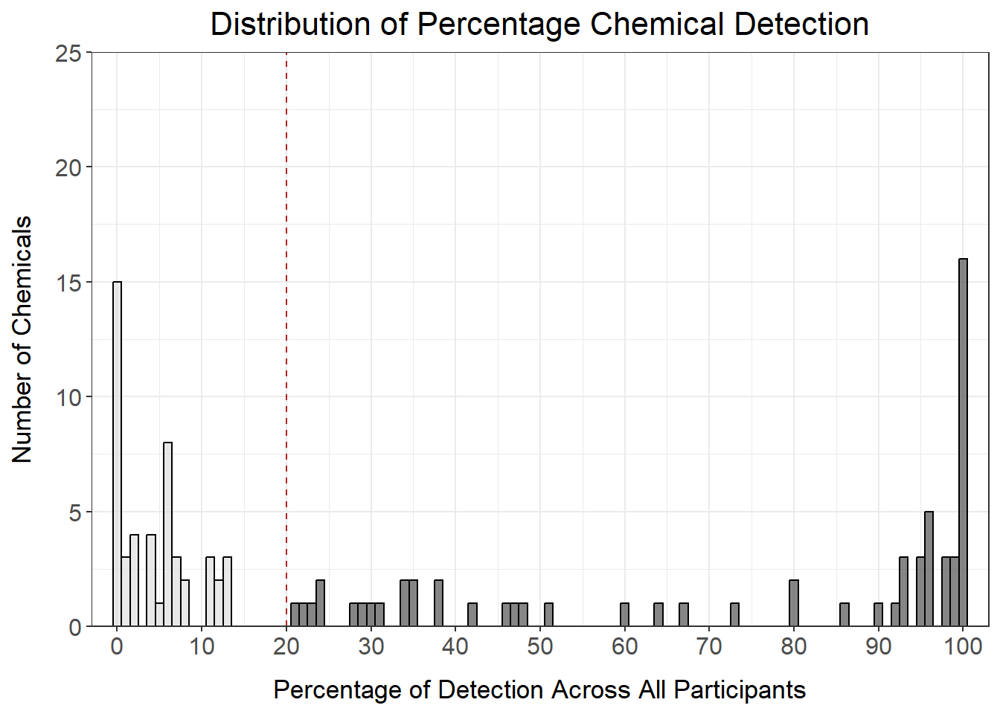

6.1 Descriptive Cohort Analyses
This training module was developed by Elise Hickman, Kyle Roell, and Julia E. Rager.
All input files (script, data, and figures) can be downloaded from the UNC-SRP TAME2 GitHub website.
Introduction to Training Module
Human cohort datasets are very commonly analyzed and integrated in environmental health research. Commone research study designs that incorporate human data include clinical, epidemiological, biomonitoring, and/or biomarker study designs. These datasets represent metrics of health and exposure collected from human participants at one or many points in time. Although these datasets can lend themselves to highly complex analyses, it is important to first explore the basic dataset properties to understand data missingness, filter data appropriately, generate demographic tables and summary statistics, and identify outliers. In this module, we will work through these common steps with an example dataset and discuss additional considerations when working with human cohort datasets.
Our example data are derived from a study in which chemical exposure profiles were collected using silicone wristbands. Silicone wristbands are an affordable and minimally invasive method for sampling personal chemical exposure profiles. This exposure monitoring technique has been described through previous publications (see TAME 2.0 Module 3.3 Normality Tests and Data Transformations). The example workflow can also apply to other study designs, including biomonitoring and biomarker studies, which require careful consideration of chemical or biological marker detection filters, transparent reporting of descriptive statistics, and demographics tables.
Training Module’s Environmental Health Questions
- What proportion of participants wore their wristbands for all seven days?
- How many chemicals were detected in at least 20% of participants?
- What are the demographics of the study participants?
Workspace Preparation and Data Import
# Load packages
library(tidyverse) # for data organization and manipulation
library(janitor) # for data cleaning
library(openxlsx) # for reading in and writing out files
library(DT) # for displaying tables
library(table1) # for making tables
library(patchwork) # for graphing
library(purrr) # for summary stats
library(factoextra) # for PCA outlier detection
library(table1) # for making demographics table
# Make sure select is calling the correct function
select <- dplyr::select
# Set graphing theme
theme_set(theme_bw())First, we will import our raw chemical data and preview it.
wrist_data <- read.xlsx("Module6_1_Input/Module6_1_InputData1.xlsx") %>%
mutate(across(everything(), \(x) as.numeric(x)))
datatable(wrist_data[ , 1:6])In this study, 97 participants wore silicone wristbands for one week, and chemical concentrations on the wristbands were measured with gas chromatography mass spectrometry. This dataframe consists of a column with a unique identifier for each participant (S_ID), a column describing the number of days that participant wore the wristband (Ndays), and subsequent columns containing the amount of each chemical detected (nanograms of chemical per gram of wristband). The chemical columns are labeled with the chemical class first (e.g., alkyl OPE, or alkyl organophosphate ester), followed by and underscore and the chemical name (e.g., 2IPPDPP). This dataset contains 110 different chemicals categorized into 8 chemical classes (listed below with their abbreviations):
- Brominated diphenyl ether (BDE)
- Brominated flame retardant (BFR)
- Organophosphate ester (OPE)
- Polycyclic aromatic hydrocarbon (PAH)
- Polychlorinated biphenyl (PCB)
- Pesticide (Pest)
- Phthalate (Phthal)
- Alkyl organophosphate ester (alkylOPE)
Through the data exploration and cleaning process, we will aim to:
- Understand participant behaviors
- Filter out chemicals with low detection
- Generate a supplemental table containing chemical detection information and summary statistics such as minimum, mean, median, and maximum
- Identify participant outliers
- Generate a demographics table
Although these steps are somewhat specific to our example dataset, similar steps can be taken with other datasets. We recommend thinking through the structure of your data and outlining data exploration and cleaning steps prior to starting your analysis. This process can be somewhat time-consuming and tedious but is important to ensure that your data are well-suited for downstream analyses. In addition, these steps should be included in any resulting manuscript as part of the narrative relating to the study cohort and data cleaning.
Participant Exploration
We can use tidyverse functions to quickly tabulate how many days participants wore the wristbands.
wrist_data %>%
# Count number of participants for each number of days
dplyr::count(Ndays) %>%
# Calculate proportion of partipants for each number of days
mutate(prop = prop.table(n)) %>%
# Arrange the table from highest to lowest number of days
arrange(-Ndays) %>%
# Round the proportion column to two decimal places
mutate(across(prop, \(x) round(x, 2)))## Ndays n prop
## 1 7 83 0.86
## 2 6 6 0.06
## 3 5 3 0.03
## 4 3 1 0.01
## 5 2 2 0.02
## 6 1 2 0.02Answer to Environmental Health Question 1
With this, we can now answer Environmental Health Question #1: What proportion of participants wore their wristbands for all seven days?
Answer: 86% of participants wore their wristbands for all seven days.
Because a few participants did not wear their wristbands for all seven days, it will be important to further explore whether there are outlier participants and to normalize the chemical concentrations by number of days the wristband was worn. We can first assess whether any participants have a particularly low or high number of chemicals detected relative to the other participants.
We’ll prepare the data for graphing by creating a dataframe containing information about how many chemicals were detected per participant.
wrist_det_by_participant <- wrist_data %>%
# Remove Ndays column because we don't need it for this step
select(-Ndays) %>%
# Move S_ID to rownames so it doesn't interfere with count
column_to_rownames("S_ID") %>%
# Create a new column for number of chemicals detected
mutate(n_det = rowSums(!is.na(.))) %>%
# Clean dataframe
rownames_to_column("S_ID") %>%
select(c(S_ID, n_det))
datatable(wrist_det_by_participant)Then, we can make our histogram:
det_per_participant_graph <- ggplot(wrist_det_by_participant, aes(x = n_det)) +
geom_histogram(color = "black",
fill = "gray60",
alpha = 0.7,
binwidth = 2) +
ggtitle("Distribution of Number of Chemicals Detected Per Participant") +
ylab("Number of Participants") +
xlab("Number of Chemicals Detected") +
scale_x_continuous(breaks = seq(0, 70, by = 10), limits = c(0, 70), expand = c(0.025, 0.025)) +
scale_y_continuous(breaks = seq(0, 15, by = 5), limits = c(0, 15), expand = c(0, 0)) +
theme(plot.title = element_text(hjust = 0.5, size = 16),
axis.title.x = element_text(margin = ggplot2::margin(t = 10), size = 13),
axis.title.y = element_text(margin = ggplot2::margin(r = 10), size = 13),
axis.text = element_text(size = 12))
det_per_participant_graphFrom this histogram, we can see that the number of chemicals detected per participant ranges from about 30-65 chemicals, with no participants standing out as being well above or below the distribution.
Chemical Detection Filtering
Next, we want to apply a chemical detection filter to remove chemicals from the dataset with very low detection. To start, let’s make a dataframe summarizing the percentage of participants in which each chemical was detected and graph this distribution using a histogram.
# Create dataframe where n_detected is the sum of the rows where there are not NA values
chemical_counts <- data.frame(n_detected = colSums(!is.na(wrist_data %>% select(-c(S_ID, Ndays))))) %>%
# Move rownames to a column
rownames_to_column("class_chemical") %>%
# Add n_undetected and percentage detected and undetected columns
mutate(n_undetected = nrow(wrist_data) - n_detected,
perc_detected = n_detected/nrow(wrist_data)*100,
perc_undetected = n_undetected/nrow(wrist_data)*100) %>%
# Round percentages to two decimal places
mutate(across(c(perc_detected, perc_undetected), \(x) round(x, 2)))
# View dataframe
datatable(chemical_counts)det_per_chemical_graph <- ggplot(chemical_counts, aes(x = perc_detected)) +
geom_histogram(color = "black",
fill = "gray60",
alpha = 0.7,
binwidth = 1) +
scale_x_continuous(breaks = seq(0, 100, by = 10), expand = c(0.025, 0.025)) +
scale_y_continuous(breaks = seq(0, 25, by = 5), limits = c(0, 25), expand = c(0, 0)) +
ggtitle("Distribution of Percentage Chemical Detection") +
ylab("Number of Chemicals") +
xlab("Percentage of Detection Across All Participants") +
theme(plot.title = element_text(hjust = 0.5),
axis.title.x = element_text(margin = ggplot2::margin(t = 10)),
axis.title.y = element_text(margin = ggplot2::margin(r = 10)))
det_per_chemical_graphFrom this histogram, we can see that many of the chemicals fall in the < 15% or > 90% detection range, with the others distributed evenly between 20 and 90% detection. How we choose to filter our data in part depends on the goals of our analysis. For example, if we only want to keep chemicals detected for almost all of the participants, we could set our threshold at 90% detection:
# Add annotation column
chemical_counts <- chemical_counts %>%
mutate(det_filter_90 = ifelse(perc_detected > 90, "Yes", "No"))
# How many chemicals pass this filter?
nrow(chemical_counts %>% filter(det_filter_90 == "Yes"))## [1] 34# Make graph
det_per_chemical_graph_90 <- ggplot(chemical_counts, aes(x = perc_detected, fill = det_filter_90)) +
geom_histogram(color = "black",
alpha = 0.7,
binwidth = 1) +
scale_fill_manual(values = c("gray87", "gray32"), guide = "none") +
geom_segment(aes(x = 90, y = 0, xend = 90, yend = 25), color = "firebrick", linetype = 2) +
scale_x_continuous(breaks = seq(0, 100, by = 10), expand = c(0.025, 0.025)) +
scale_y_continuous(breaks = seq(0, 25, by = 5), limits = c(0, 25), expand = c(0, 0)) +
ggtitle("Distribution of Percentage Chemical Detection") +
ylab("Number of Chemicals") +
xlab("Percentage of Detection Across All Participants") +
theme(plot.title = element_text(hjust = 0.5, size = 16),
axis.title.x = element_text(margin = ggplot2::margin(t = 10), size = 13),
axis.title.y = element_text(margin = ggplot2::margin(r = 10), size = 13),
axis.text = element_text(size = 12))
det_per_chemical_graph_90However, this only keeps 34 chemicals in our dataset, which is a significant proportion of all of the chemicals measured. We could also consider setting the filter at 20% detection to maximize inclusion of as many chemicals as possible.
# Add annotation column
chemical_counts <- chemical_counts %>%
mutate(det_filter_20 = ifelse(perc_detected > 20, "Yes", "No"))
# How many chemicals pass this filter?
nrow(chemical_counts %>% filter(det_filter_20 == "Yes"))## [1] 62# Make graph
det_per_chemical_graph_20 <- ggplot(chemical_counts, aes(x = perc_detected, fill = det_filter_20)) +
geom_histogram(color = "black",
alpha = 0.7,
binwidth = 1) +
scale_fill_manual(values = c("gray87", "gray32"), guide = "none") +
geom_segment(aes(x = 20, y = 0, xend = 20, yend = 25), color = "firebrick", linetype = 2) +
scale_x_continuous(breaks = seq(0, 100, by = 10), expand = c(0.025, 0.025)) +
scale_y_continuous(breaks = seq(0, 25, by = 5), limits = c(0, 25), expand = c(0, 0)) +
ggtitle("Distribution of Percentage Chemical Detection") +
ylab("Number of Chemicals") +
xlab("Percentage of Detection Across All Participants") +
theme(plot.title = element_text(hjust = 0.5, size = 16),
axis.title.x = element_text(margin = ggplot2::margin(t = 10), size = 13),
axis.title.y = element_text(margin = ggplot2::margin(r = 10), size = 13),
axis.text = element_text(size = 12))
det_per_chemical_graph_20
Answer to Environmental Health Question 2
With this, we can now answer Environmental Health Question #2: How many chemicals were detected in at least 20% of participants?
Answer: 62 chemicals were detected in at least 20% of participants.
We’ll use the 20% detection filter for downstream analyses to maximize inclusion of data for our study. Note that selection of data filters is highly project- and goal- dependent, so be sure to take into consideration typical workflows for your type of data, study, or lab group.
# Create vector of chemicals to keep
chemicals_20perc <- chemical_counts %>%
filter(perc_detected > 20) %>%
pull(class_chemical)
# Filter dataframe
wrist_data_filtered <- wrist_data %>%
column_to_rownames("S_ID") %>%
dplyr::select(all_of(chemicals_20perc))We can also summarize chemical detection vs. non-detection by chemical class to understand the number of chemicals in each class that were 1) detected in any participant or 2) detected in more than 20% of participants.
chemical_count_byclass <- chemical_counts %>%
separate(class_chemical, into = c("class", NA), remove = FALSE, sep = "_") %>%
group_by(class) %>%
summarise(n_chemicals = n(),
n_chemicals_det = sum(n_detected > 0),
n_chemicals_det_20perc = sum(perc_detected >= 20)) %>%
bind_rows(summarise(., across(where(is.numeric), sum),
across(where(is.character), ~'Total')))
datatable(chemical_count_byclass)From these data, we can see that, of the 62 chemicals retained by our detection filter, some classes were retained more than others. For example, of the 8 of the 10 phthalates (80%) were retained by the 20% detection filter, while only 2 of the 11 PCBs (18%) were retained.
Outlier Identification
Next, we will check to see if any participants are outliers based on the entire chemical signature for each participant using principal component analysis (PCA). Prior to checking for outliers, a few final data cleaning steps are required, which are beyond the scope of this specific module, though we encourage participants to research these methods as they are important in general data pre-processing. These data cleaning steps were:
- Imputing missing values.
- Calculating time-weighted average values by dividing each value by the number of days the participant wore the wristband.
- Assessing normality of data with and without log2 transformation.
Here, we’ll read in the fully cleaned and processed data, which contains data for all 97 participants and the 62 chemicals that passed the detection filter (imputed, time-weighted). We will also apply log2 transformation to move the data closer to a normal distribution. For more on these steps, see TAME 2.0 Module 3.3 Normality Tests and Data Transformations and TAME 2.0 Module 4.2 Data Import, Processing, and Summary Statistics.
wrist_data_cleaned <- read.xlsx("Module6_1_Input/Module6_1_InputData2.xlsx") %>%
column_to_rownames("S_ID") %>%
mutate(across(everything(), \(x) log2(x+1)))
datatable(wrist_data_cleaned[ 1:6])First, let’s run PCA and plot our data.
# Prepare dataframe
wrist_data_cleaned_scaled <- wrist_data_cleaned %>%
scale() %>% data.frame()
# Run PCA
pca <- prcomp(wrist_data_cleaned_scaled)
# Visualize PCA
pca_chemplot <- fviz_pca_ind(pca,
label = "none",
pointsize = 3) +
theme(axis.title = element_text(face = "bold", size = rel(1.1)),
panel.border = element_rect(fill = NA, color = "black", linewidth = 0.3),
panel.grid.minor = element_blank(),
panel.grid.major = element_blank(),
plot.title = element_text(hjust = 0.5),
legend.position = "none")
pca_chemplotBy visual inspection, it looks like there may be some outliers, so we can use a formula to detect outliers. One standard way to detect outliers is the criterion of being “more than 6 standard deviations away from the mean” (Source).
We can apply this approach to our data by first creating a function to detect PCA outliers based on whether or not that participant passed a certain standard deviation cutoff.
# Create a function to detect PCA sample outliers. The input is the PCA results data frame and the number of standard deviations for the cutoff. The output is outlier names.
outlier_detection = function(pca_df, sd){
# getting scores
scores = pca_df$x
# identifying samples that are > 6 standard deviations away from the mean
outlier_indices = apply(scores, 2, function(x) which( abs(x - mean(x)) > (sd * sd(x)) )) %>%
Reduce(union, .)
# getting sample names
outliers = rownames(scores)[outlier_indices]
return(outliers)
}
# Call function with different standard deviation cutoffs
outliers_6 <- outlier_detection(pca, 6)
outliers_5 <- outlier_detection(pca, 5)
outliers_4 <- outlier_detection(pca, 4)
outliers_3 <- outlier_detection(pca, 3)
# Summary data frame
outlier_summary <- data.frame(sd_cutoff = c(6, 5, 4, 3), n_outliers = c(length(outliers_6), length(outliers_5), length(outliers_4), length(outliers_3)))
outlier_summary## sd_cutoff n_outliers
## 1 6 0
## 2 5 1
## 3 4 5
## 4 3 28From these results, we see that there are no outliers that are > 6 standard deviations from the mean, so we will proceed with the dataset without filtering any participants out.
Summary Statistics Tables
Now that we have explored our dataset and finished processing the data, we can make a summary table that includes descriptive statistics (minimum, mean, median, maximum) for each of our chemicals. This table would go into supplementary material when the project is submitted for publication. It is a good idea to make this table using both the raw data and the cleaned data (imputed and normalized by time-weighted average) because different readers may have different interests in the data. For example, they may want to see the raw data so that they can understand chemical detection versus non-detection and absolute minimums or maximums of detection. Or, they may want to use the cleaned data for their own analyses. This table can also include information about whether or not the chemical passed our 20% detection filter.
There are many ways to generate summary statistics tables in R. Here, we will demonstrate a method using the map_dfr() function, which takes a list of functions and applies them across columns of the data. The summary statistics are then placed in rows, with each column representing a variable.
# Define summary functions
summary_functs <- lst(min, median, mean, max)
# Apply summary functions to raw data
summarystats_raw <- map_dfr(summary_functs, ~ summarise(wrist_data, across(3:ncol(wrist_data), .x, na.rm = TRUE)), .id = "statistic")
# View data
datatable(summarystats_raw[, 1:6])Through a few cleaning steps, we can transpose and format these data so that they are publication-quality.
summarystats_raw <- summarystats_raw %>%
# Transpose dataframe and return to dataframe class
t() %>% as.data.frame() %>%
# Make the first row the column names
row_to_names(1) %>%
# Remove rows with NAs (those where data are completely missing)
na.omit() %>%
# Move chemical identifier to a column
rownames_to_column("class_chemical") %>%
# Round data
mutate(across(min:max, as.numeric)) %>%
mutate(across(where(is.numeric), round, 2)) %>%
# Add a suffix to column titles so we know that these came from the raw data
rename_with(~paste0(., "_raw"), min:max)
datatable(summarystats_raw)We can apply the same steps to the cleaned data.
summarystats_cleaned <- map_dfr(summary_functs, ~ summarise(wrist_data_cleaned, across(1:ncol(wrist_data_cleaned), .x, na.rm = TRUE)),
.id = "statistic") %>%
t() %>% as.data.frame() %>%
row_to_names(1) %>%
na.omit() %>%
rownames_to_column("class_chemical") %>%
mutate(across(min:max, as.numeric)) %>%
mutate(across(where(is.numeric), round, 2)) %>%
rename_with(~paste0(., "_cleaned"), min:max)
datatable(summarystats_cleaned)Finally, we will merge the data from our chemical_counts dataframe (which contains detection information for all of our chemicals) with our summary statistics dataframes.
summarystats_final <- chemical_counts %>%
# Remove 90% detection filter column
select(-det_filter_90) %>%
# Add raw summary stats
left_join(summarystats_raw, by = "class_chemical") %>%
# Add cleaned summary stats
left_join(summarystats_cleaned, by = "class_chemical")
datatable(summarystats_final, width = 600)Demographics Table
Another important element of any analysis of human data is the demographics table. The demographics table provides key information about the study participants and can help inform downstream analyses, such as exploration of the impact of covariates on the endpoint of interest. There are many different ways to make demographics tables in R. Here, we will demonstrate making a demographics table with the table1 package. For more on this package, including making tables with multiple groups and testing for statistical differences in demographics between groups, see the table1 vignette here.
First, we’ll read in and view our demographic data:
Then, we can create new labels for our variables so that they are more nicely formatted and more intuitive for display in the table.
# Create new labels for the demographics table
label(demo_data$mat_age_birth) <- "Age at Childbirth"
label(demo_data$pc_sex) <- "Sex"
label(demo_data$pc_gender) <- "Gender"
label(demo_data$pc_latino_hispanic) <- "Latino or Hispanic"
label(demo_data$pc_race_cleaned) <- "Race"
label(demo_data$pc_ed) <- "Educational Attainment"Our demographics data also had “F” for female in the sex column. We can change this to “Female” so that the demographics table is more readable.
demo_data <- demo_data %>%
mutate(pc_sex = dplyr::recode(pc_sex, "F" = "Female"))
label(demo_data$pc_sex) <- "Sex"Now, let’s make the table. The first argument in the formula is all of the columns you want to include in the table, followed by the input dataframe.
table1(~ mat_age_birth + pc_sex + pc_gender + pc_latino_hispanic + pc_race_cleaned + pc_ed, data = demo_data)| Overall (N=97) |
|
|---|---|
| Age at Childbirth | |
| Mean (SD) | 31.0 (5.54) |
| Median [Min, Max] | 31.1 [19.0, 46.0] |
| Sex | |
| Female | 97 (100%) |
| Gender | |
| Woman | 97 (100%) |
| Latino or Hispanic | |
| No | 82 (84.5%) |
| Yes | 15 (15.5%) |
| Race | |
| Biracial/Multiracial | 5 (5.2%) |
| Black | 19 (19.6%) |
| Other | 11 (11.3%) |
| White | 62 (63.9%) |
| Educational Attainment | |
| Associate Degree | 6 (6.2%) |
| Four-Year Degree | 36 (37.1%) |
| High School or GED | 28 (28.9%) |
| Master's Degree | 15 (15.5%) |
| Professional Degree or PhD | 12 (12.4%) |
There are a couple of steps we could take to clean up the table:
- Change the rendering for our continuous variable (age) to just mean (SD).
- Order educational attainment so that it progresses from least to most education.
We can change the rendering for our continuous variable by defining our own rendering function (as demonstrated in the package’s vignette).
# Create function for custom table so that Mean (SD) is shown for continuous variables
my.render.cont <- function(x) {
with(stats.apply.rounding(stats.default(x), digits=2),
c("", "Mean (SD)"=sprintf("%s (± %s)", MEAN, SD)))
}We can order the education attainment by changing it to a factor and defining the levels.
demo_data <- demo_data %>%
mutate(pc_ed = factor(pc_ed, levels = c("High School or GED", "Associate Degree", "Four-Year Degree",
"Master's Degree", "Professional Degree or PhD")))
label(demo_data$pc_ed) <- "Educational Attainment"Then, we can make our final table.
table1(~ mat_age_birth + pc_sex + pc_gender + pc_latino_hispanic + pc_race_cleaned + pc_ed,
data = demo_data,
render.continuous = my.render.cont)| Overall (N=97) |
|
|---|---|
| Age at Childbirth | |
| Mean (SD) | 31 (± 5.5) |
| Sex | |
| Female | 97 (100%) |
| Gender | |
| Woman | 97 (100%) |
| Latino or Hispanic | |
| No | 82 (84.5%) |
| Yes | 15 (15.5%) |
| Race | |
| Biracial/Multiracial | 5 (5.2%) |
| Black | 19 (19.6%) |
| Other | 11 (11.3%) |
| White | 62 (63.9%) |
| Educational Attainment | |
| High School or GED | 28 (28.9%) |
| Associate Degree | 6 (6.2%) |
| Four-Year Degree | 36 (37.1%) |
| Master's Degree | 15 (15.5%) |
| Professional Degree or PhD | 12 (12.4%) |
Answer to Environmental Health Question 3
With this, we can now answer Environmental Health Question #3: What are the demographics of the study participants?
Answer: The study participants were all females who identified as women and were, on average, 31 years old when they gave birth. Participants were mostly non-latino/non-hispanic and White. Participants were spread across educational attainment levels, with the smallest education attainment group being those with an associate degree and the largest being those with a four-year degree.
Concluding Remarks
In conclusion, this training module serves as an introduction to human cohort data exploration and preliminary analysis, including data filtering, summary statistics, and multivariate outlier detection. These methods are an important step at the beginning of human cohort analyses, and the concepts introduced in this module can be applied to a wide variety of datasets.
Using a more expanded demographics file (“Module6_1_TYKInput.xlsx”), create a demographics table with:
- The two new variables (home location and home type) included
- The table split by which site the participant visited
- Variable names and values presented in a publication-quality format (first letters capitalized, spaces between words, no underscores)